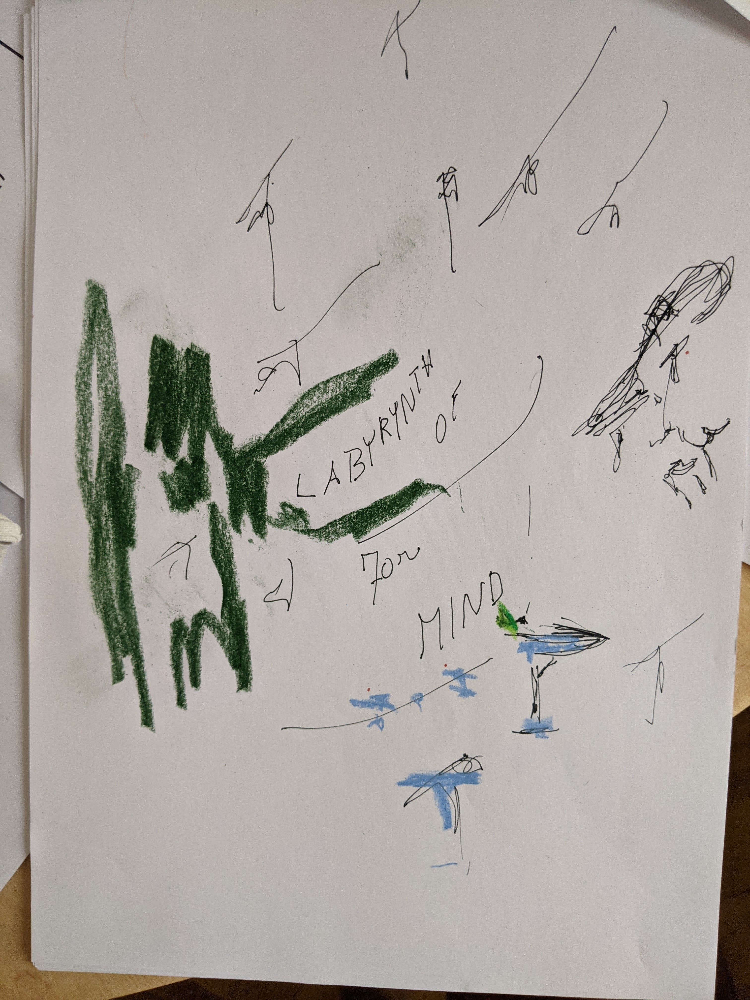
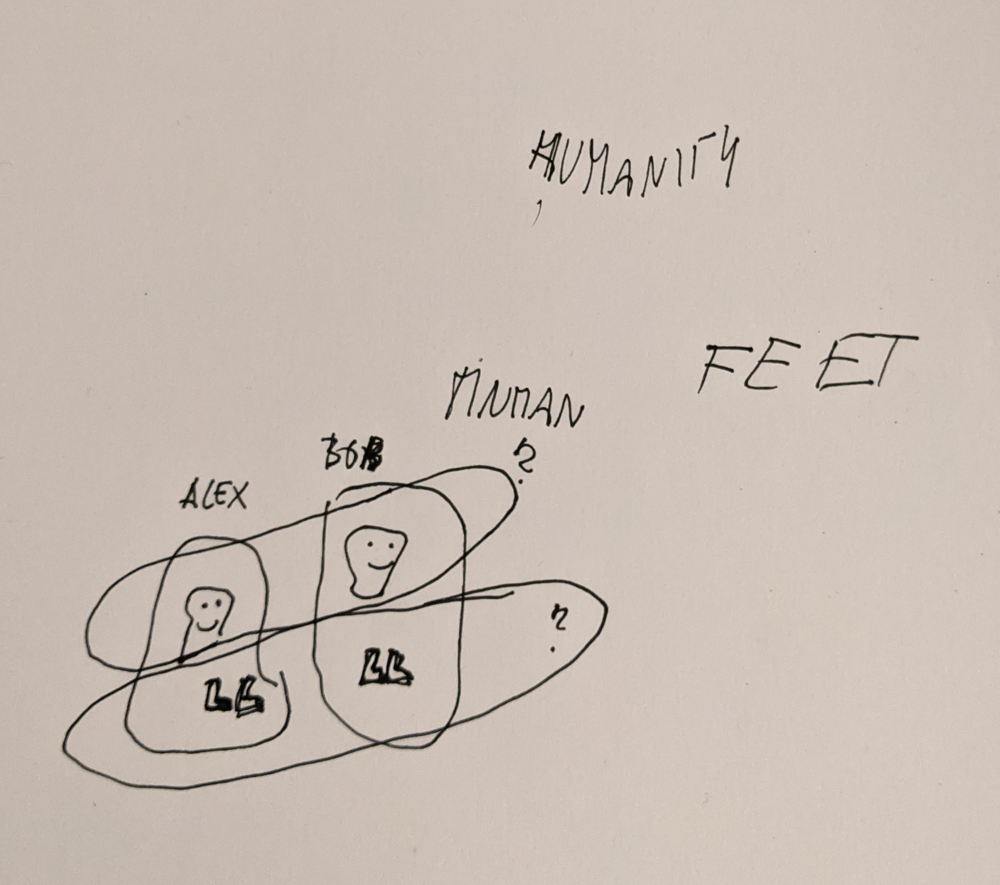
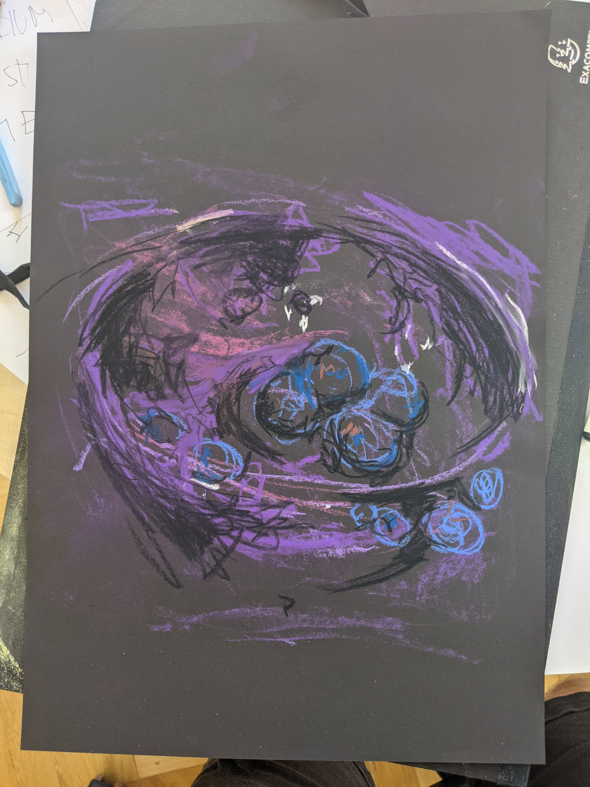
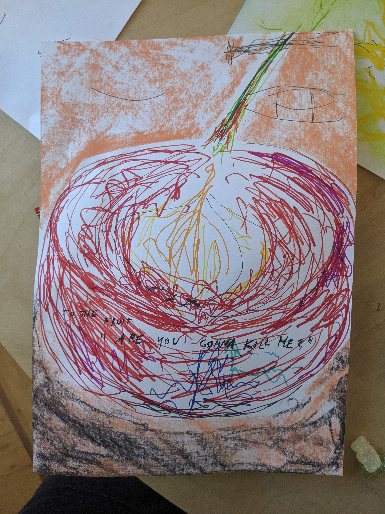
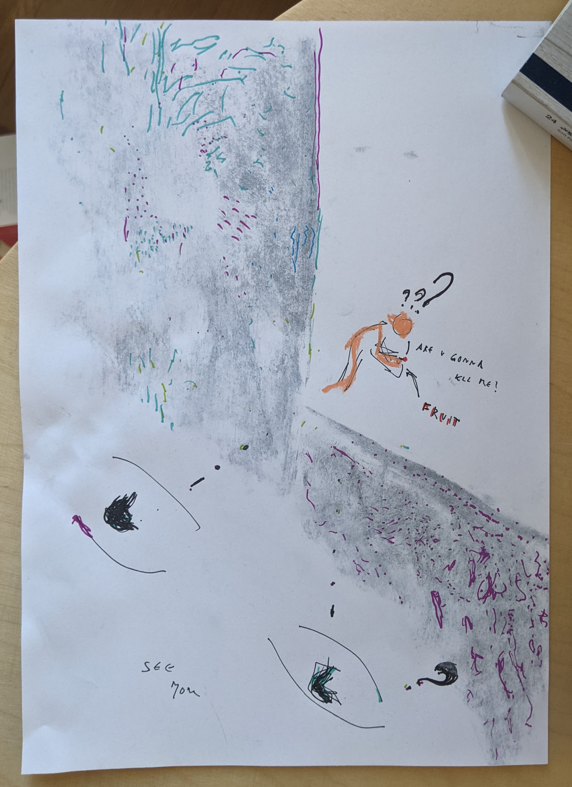
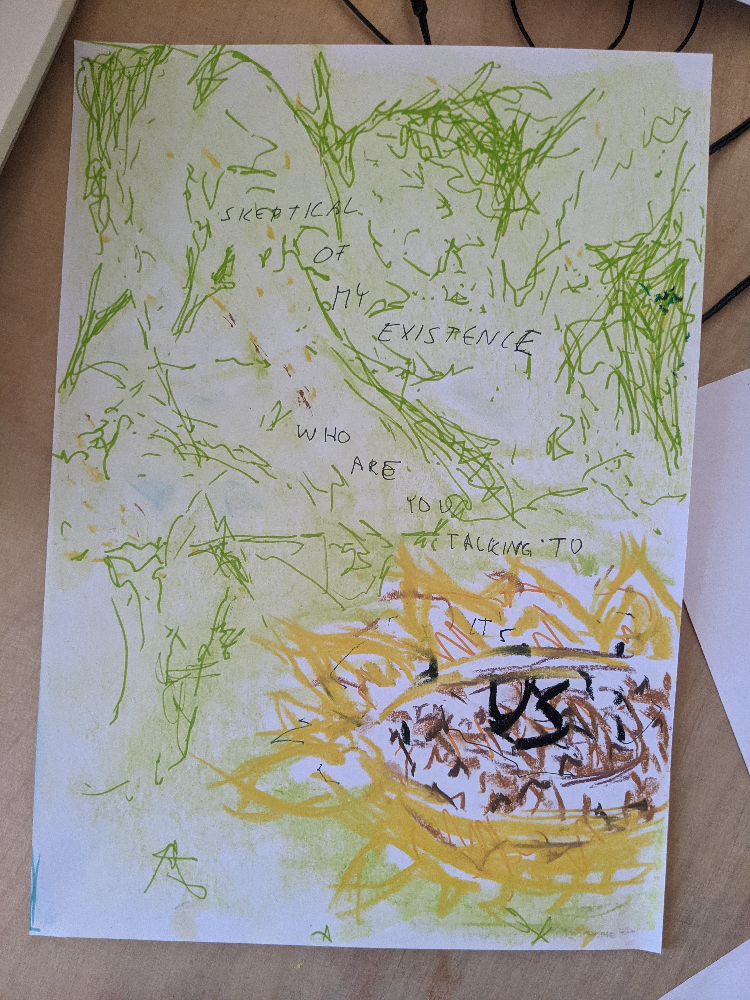
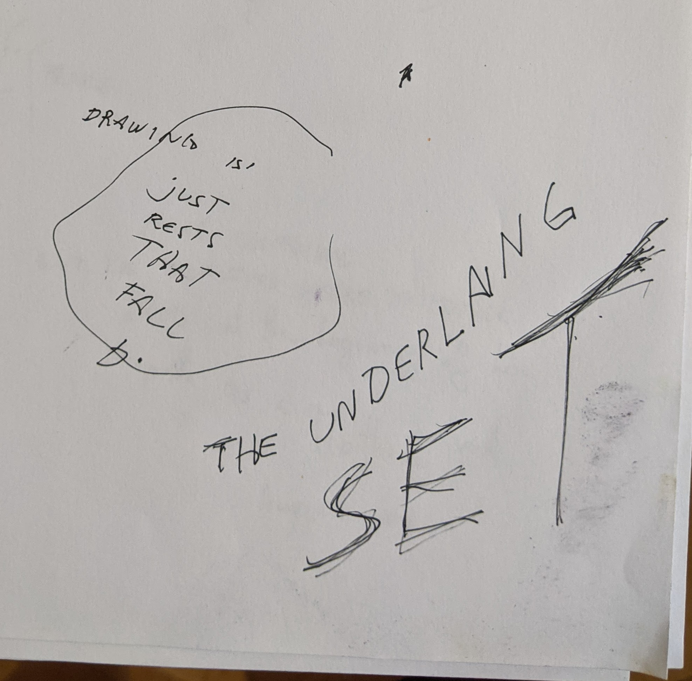
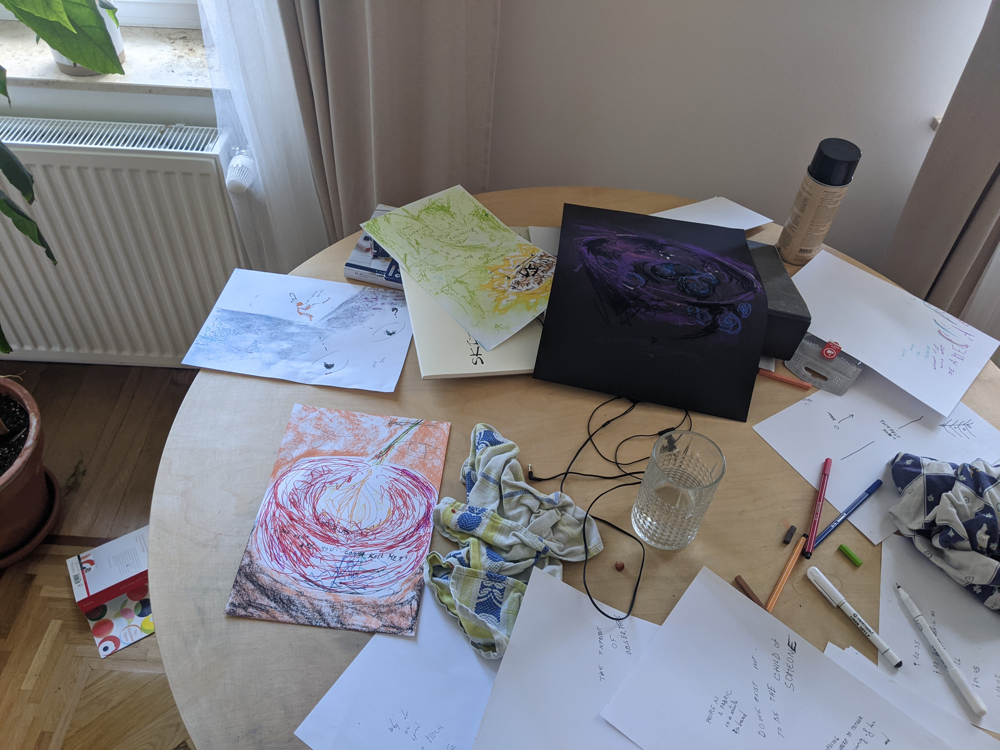

The fungus of humanity
Wednesday 4. August 2021 - 10:35
I took 1.2 papers. I was alone. I met K only in the evening.
The accents of inner voices
This time my mind would speak always english, but with different accents, depending on the discussed subject.
It was more than accent. It was the way of speaking. When thinking of my art the voices spoke like the french speak
in english. Every sentence was open ended. Everything was just a proposition with no clear statement. It would always end with a nasal "... non?".
When thinking about inner wars, the
kind that a culture has with itself. I could hear the roar of the spanish language. The muscled face of a dark haired
man that has strong convictions with little to justify them. I could see the colors of the processed leather tainted with the dried blood of his brother.
The sun setting on the orange sand. There were other languages, but I don't remember them.

Somehow the above picture felt complete. It was a big party with a lot of people (all the black squigles), martini glasses (blue). And an old-school bar with historic green.
Humanity as a fungus
Most of the day was spent thinking of humanity as a whole. As this soup of people that you get once you remove the boundaries that we put between the separate selves.
I drew a decomposition of a human. Into the separate things that compose it. And then drew another one next to it.
Now Alex and Bob were just one of the possible groupings of these attributes. We might as well group the attributes in a perpendicular fashion. What is the name of the horizontal group? Just "feet"?

The point of the drawing was not to focus on the horizontal groups. But to realize the ridiculousness of what we call identities. What makes you "you" and me "me".
The grouping of those selves started to look like astronauts - the outer bubble being the space suit. So I decided to draw them on a new paper.
Once I applied the white of the space suit I realized I wouldn't capture them as I wanted and that the concept of there being two of something was good enough, so they were left as white stains for most of the time,
only at the very end when I could feel their excitement of the universe I decided to draw their faces and headphones.
The debris that I drew on one of the rings started to look a lot like an organic creature and I remembered the cow in the tornado I drew in the past. I thought it would be a funny reference for K given that he liked it
so much back then. I tried to make it look more like a dinosaur to the point where it was more obvious than I would have whished it to be, but it was too late, now it was part of the piece. I added an arrow whithout which
it would have been just a random dino floating in space.
The more I thought of humanity the more I saw it as this parasite that is just trying to survive on earth. And people are just the computer that it needs to run on.
All the things that we build on top of that are just tricks to keep the machine running. For instance the idea of you being one and not all being one. It's an arbitrary choice that this fungus has made just like an athlete picks their shoes.
In the evening I met with K. And most of the conversation was about humanity as a funghi. Walking to the meeting I saw tons of people in the park. Everyone doing something different, yet just trying to keep this machine running.
It's at that moment that I saw the whole planet covered in this fungus that just tries to find the right ratios to keep things healthy. Every aspect of human existence just being a small number between 0.0 and 1.0 that can be moved a bit
and we can observe the consequences of it. On the way to the meeting I had trouble finding a toilet. The ratio of toilets to area in this city is clearly wrong and it made me really angry.
I was really trying to find back who I was and how does it make sense at all that an I exists. And I wrote "It doesn't feel as if I was paying for it". Meaning that the fact that specifically I had to pay for the LSD and get me to this experience
of existence was the only reminder that there was a one me. Because the others didn't have to do it, I had to.

K would ask me what I meant when I said that it felt more important. "it" being this state of higher existence. The state in which religion happens, in which people decide to have families. The state in which humanity moves forward.
And I used the following analogy: Imagine you're watching a movie where there's a bank robbery. A guy shows up in a bank with a gun. Now imagine the person you're watching the movie with starts asking questions about the t-shirt of the robber.
What color was it. What material is it made of. And you're just wondering how has it anything to do with the storyline. The t-shirt had to obviously be there. But it's not what the story is about.

I drew a bowl with the rest of blueberries that I ate. I had to stand in the kitched to do it, it was not easy. It was a blind kind of drawing. I would put color on a guessed point of the drawing and wait how the perceived image changed.
If it improved I simply insisted, otherwise I would continue elsewhere. I would later describe it as a pilot flying a plane when there is no visibility. You fly the plane based off what the radar draws on a screen, but the plane ends up tracing
the same path as if you followed your sight. In computers, programs have one input and one output streams. Through one you can feed data in and through the other it sends data to you. When a terminal asks you for your username
you have the impression that you're having an interactive conversation and that you're answering to that specific question. Yet those streams are implemented as completely separate data highways. It is possible (in Linux) to create a file with all the responses that you know you will have to provide
and "pipe" the file to the program. The program will happily accept the username, ask the next question and then consume the next line of the file, completely unaware that all the answers come from a predetermited script like a theater play.
A similar concept is how they must drive vehicles on Mars. You can send it a command and you start observing the results of it only 8 minutes later (because of the roundtrip time of communication). If you send more than one command
it becomes really hard to associate observed states with sent commands. It's this act of looking at the whole input and deciding "what next?".
Somehow magically during the conversation with K, he asked if I played any more Civilization V (strategic videogame). I realized it must have been the source of a lot of these ideas.
It really gives you a different perspective on how humanity is managed on the level of numbers. Increase this number here, decrease that number there.
There were moments in the game where I conquered a city that was obviously more advanced than what I was capable of building or managing. It felt wrong to become their leader.
Yet what was the right solution?
I saw humans as the struggle of life. Generations of people being born and dying. I saw the path of a mother. I saw my mother. I stood where she had, when she got her first child.
I saw her young and afraid, ignorant of what her future would bring. All the places they would live in, the struggles the family would go through. Like landing on a planet as the first generation.
I could see the excitement in her eyes, how proud she was. I wish I could have told her how much flavor there would have been in the future. I cried. For the first time in a long time I wanted to hug her.
The cherry and the observer
I was eating a cherry when I looked at it from really up close. I could feel that primary instinct of survival. When an animal is finally close to food, but it knows it has to make sure
that the food will not kill it. So you look for molds and parasites.
I wanted to capture the detail of this inspection. It was my first time using sharpies for the job. I didn't really bother to much thinking how they should be used, and instead used them as
one would use a chalk.

I then caught myself thinking of the situation and wanted to capture the act of describing the situation. An external observer thinking of the existence of an organism.

I later wrote "fixpoint of the observer". As the observer that observes the observer. I guess philosophy is just the fixpoint of observing.
The spider

For some reason I drew a sunflower. A sunflower field always implies the most clear sky. Suddenly I saw this net over the sky. The sky would shine through it, it was like a membrane. In structure in reminded a bit of how muscles connect to tendons.
But when I started to outline its shape I felt like a spider. It was very regular and defined by nature. I was effectively trying to capture what people usually visualize with isolines. I can still see it in the drawing, even though it's clear to me that others can't.
The underlying set

I remembered how category theorists will often try to interpret stuff in terms of sets as Set is a well understood universal language.
I had a similar feeling about drawing. You can flow through different universes of understanding where the machinery that makes everything tick works completely differently but there's
this stuff that percolates down from the table onto the floor and and the end of the dinner you're left with this mass of debris that tells a story of what happened on the table.
